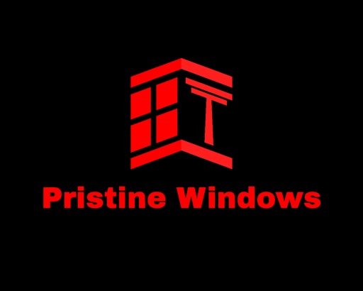
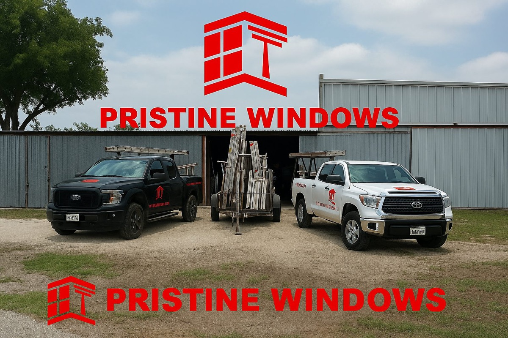

Pristine Windows and Services
Services
Gallery
About
Reviews
FAQ
Request a Quote
Text / Call
Gallery
Recent projects and highlights.
Projects
‹

Main project photo
›
Our Team
‹
Our team
›
The team at work
‹
Team at work
›
Prefer to text or call?
Tap to view options
Text us
•
Call us